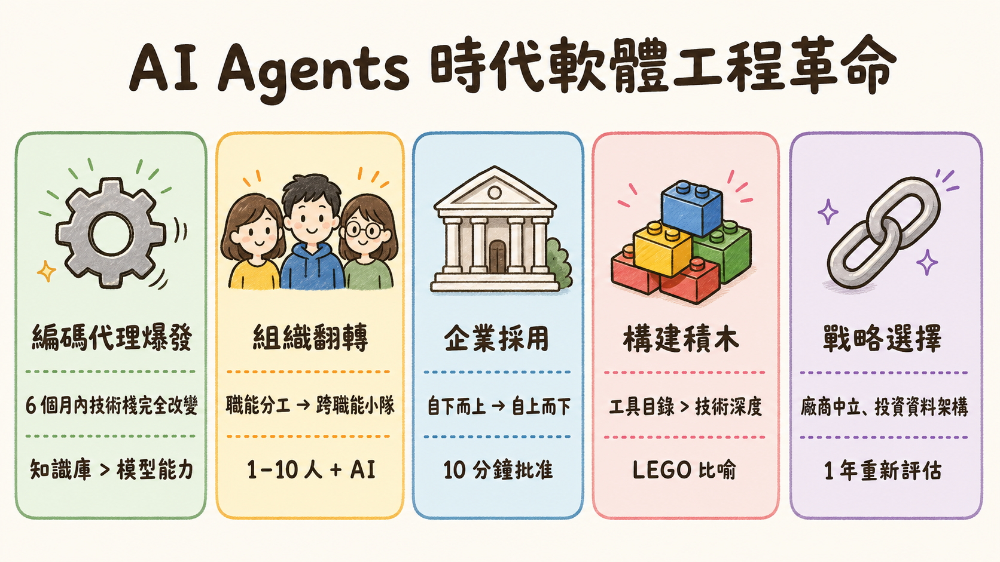
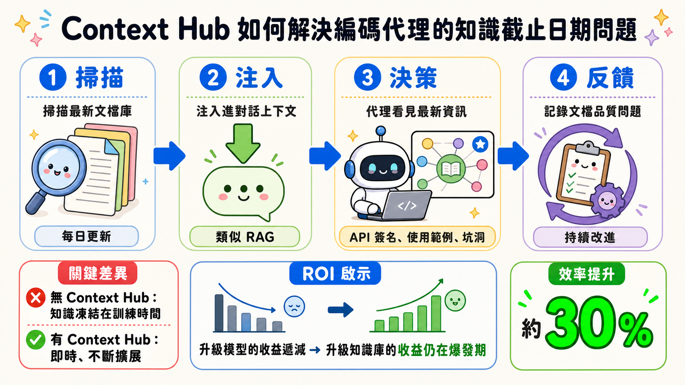
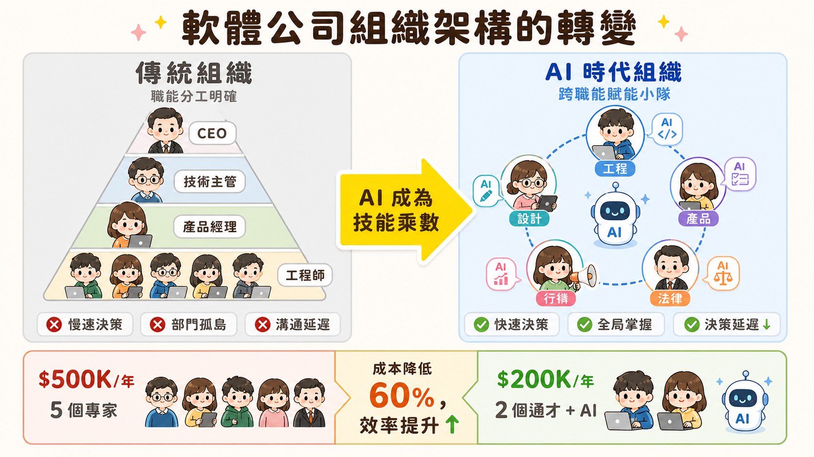
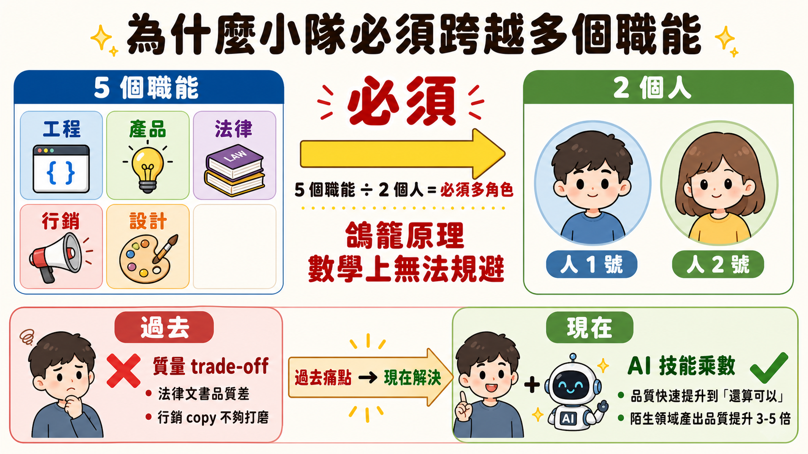
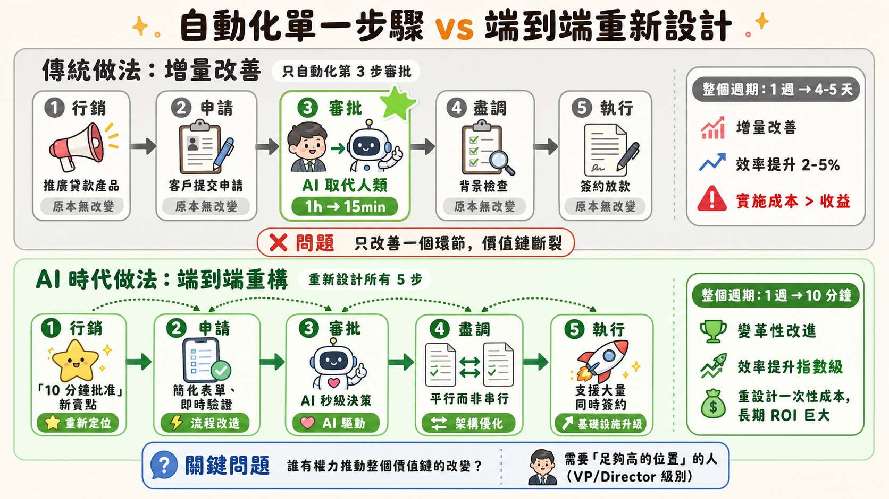
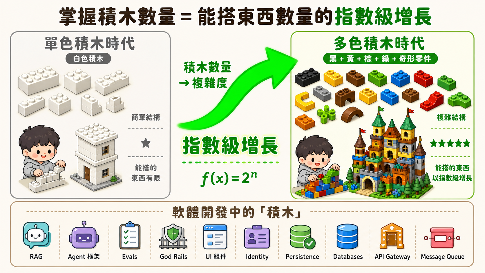
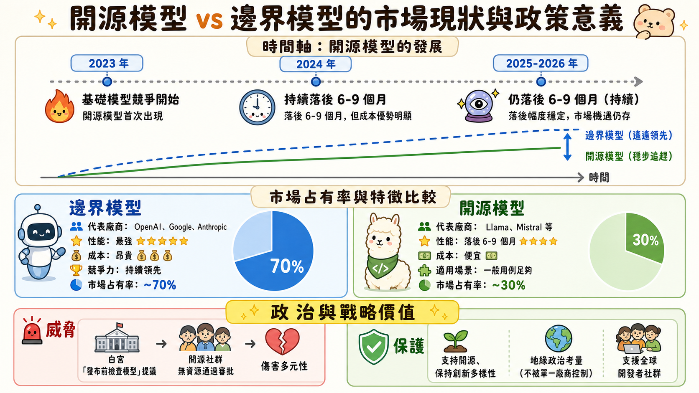
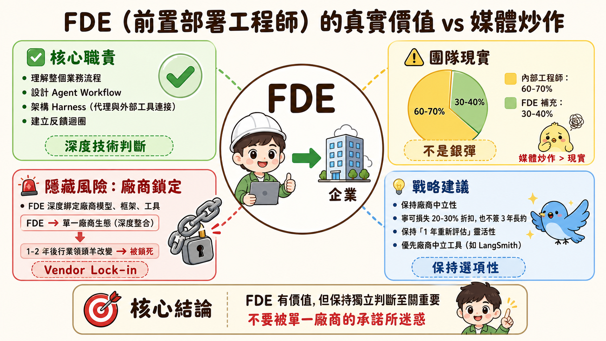

Andrew Ng 訪談深度導讀：AI Agents 時代的軟體工程革命
The Future of AI Agents with Andrew Ng | Interrupt 26（約 32 分鐘）

📹 影片資訊
| 項目 | 內容 |
|---|---|
| 標題 | The Future of AI Agents with Andrew Ng | Interrupt 26 |
| 來源 | LangChain 官方頻道 |
| 講者 | Andrew Ng（DeepLearning.AI、AI Fund、AI Aspire 創辦人） |
| 對話主持 | Harrison Chase（LangChain 創辦人） |
| 活動 | Interrupt（LangChain 舉辦的 AI Agents 專題會議） |
| 上傳日期 | 2026 年 6 月 17 日 |
| 頻道訂閱人數 | 18.6 萬 |
| 觀看次數 | 7,221+ |
| 時長 | 約 32 分鐘 |
官方資源：
- 🔗 YouTube 原始影片（The Future of AI Agents with Andrew Ng | Interrupt 26）
- 🔗 LangChain 官網
⏱️ 影片時間軸導航
點擊展開或直接點擊時間跳轉：
📹 基礎認知（0:00 - 2:01） 4 個時點
- 開場與介紹
- 過去一年的驚喜
- 編碼代理的崛起
- 產品管理瓶頸
🏗️ 組織與人才（4:50 - 11:46） 6 個時點
- 新型通才工程師的背景
- 如何進入 AI 軟體工程
- 構建積木與組合開發
- Context Hub 與保持代理更新
- DeepLearning.AI、LangChain、短課程
- CodeDream.ai 與互動學習
💼 企業 AI 採用（13:29 - 26:38） 10 個時點
- 企業 AI 採用：成功與失敗
- 銀行貸款審批案例
- 成本節省 vs 驅動增長
- AI 驅動商業增長的案例
- ROI 測量
- 「為柵欄揮動」vs 增量收益
- 前置部署工程師（FDE）：炒作 vs 現實
- 廠商鎖定與保持靈活性
- LangSmith 作為廠商中立層
- 開源與開源權重模型
📚 資料與未來（26:38 - 31:22） 3 個時點
- 資料策略與 Agent 構建
- 非結構化資料與即將到來的重新架構
- 閉幕致詞與感謝
📚 訪談背景
訪談時間：2026 年某次大型 AI 產業會議（Year 2 回顧）
對話形式：爐邊談話（Fireside Chat）
核心主題：AI Agents 爆發對軟體工程、企業採用、人才結構的深層影響
📋 訪談核心摘要
這場對話圍繞過去一年 AI 領域的「快」與「慢」展開。Andrew Ng 指出：編碼代理的演化速度遠超預期（6 個月技術棧完全改變），但企業 AI 的真實落地卻陷入「自下而上創新死局」——單點自動化只帶來增量收益，必須有人從全局重新設計整個工作流程。
這不是技術問題，而是組織架構與決策權的問題。當軟體開發變成每週產出而非每季產出時，產品、行銷、法律、設計都成為新的瓶頸。傳統的職能分工在此刻完全失效，取而代之的是 1-10 人的高度賦能通才小隊——他們用 AI 作為「技能增幅器」，跨越原本需要專家才能做的工作。
🔍 第一層：編碼代理的知識真空危機

痛點先行
假設你是一名工程師，手握最強大的編碼代理（Claude Code、GPT-4 Codex、Gemini）。你告訴它：「幫我整合 Nano-Banana API」。代理停滯了。不是因為它「不夠聰明」，而是因為 Nano-Banana 是在模型訓練完成後發布的——沒有任何文檔進入 LLM 的知識。
這是隱形的天花板。你的代理在過去 3 個月內累積的所有新工具、新框架、新 SDK，它一無所知。而軟體世界每週都在產生新的「積木」。
靈魂拷問
傳統軟體工程的痛點是「人手不夠寫代碼」。AI Agents 的新痛點是「工具太多，AI 不知道有什麼可用」。
這反轉了整個問題的性質。你不再問「AI 能寫什麼」，而是問「AI 怎麼知道該用什麼」。這不是模型能力問題，而是知識生命週期問題。
機制解構
Context Hub 的本質很簡單：一個 Stack Overflow for AI。當你啟動代理工作流時，系統會：
- 掃描最新的文檔庫（每日更新）
- 注入進對話的上下文視窗（類似 RAG）
- 讓代理看見最新的 API 簽名、使用範例、已知坑洞
- 代理基於最新資訊做決策
但這不只是檢索（retrieval）——還包括反饋迴圈。當代理失敗時，系統記錄「哪個文檔不夠清楚」，幫助維護者持續改進文檔品質。
這創造了一個代理友善的文檔生態——不是寫給人類的（人類靠搜尋和推論），而是寫給 AI 的（精確、結構化、包含邊界）。
深層真相
為什麼這對企業這麼關鍵？因為知識窗口 = 能力邊界。
一個沒有 Context Hub 的代理，能用的工具集被凍結在訓練時間。一個有 Context Hub 的代理，能用的工具集是即時的、不斷擴展的。在編碼代理競爭每 6 個月換一次「最強」的時代，這個差異決定了 30% 左右的效率差。
企業會發現：單純升級模型（從 GPT-4 到更新版本）的收益遞減，但升級工具知識庫的收益仍在爆發期。這意味著投資於「讓代理看見新工具」，比投資於「更強的模型」更划算。
🏗️ 第二層：軟體工程組織的大翻轉

痛點先行
傳統的軟體公司架構是金字塔型：工程師 > 技術主管 > 產品經理 > 高管。每個層級做一類工作，分工明確。
現在 AI Agents 能在 1-2 天內寫出原本需要 2 週的功能。但這創造了一個荒謬的局面：
新功能每週上線，行銷團隊不知道上了什麼。上線了法律條款需求的功能，法務部門一週後才看到。設計師還在討論下季 UI，工程師已經改了三次 UI。
這不是「工程太快」的問題，而是所有其他部門都成為新的瓶頸。
靈魂拷問
在工程成為非瓶頸的世界，組織還能按照「工程部」「產品部」「行銷部」這樣的部門劃分嗎？
答案是：不能，除非你想每個部門都各自為政，互相拖累。
當一個功能只需要工程時間 1 天，但「等待法律簽核」需要 1 週，這週的延遲損失遠超過那 1 天工程成本。單位時間內的決策速度，成了競爭力的核心。
機制解構
Andrew Ng 提出的解法是：把職能混合到小隊中。
他現在組建的團隊是這樣的：
- 團隊規模：1-10 人（典型是 2-5 人）
- 角色構成：工程師 + 工程師（不，不是雙工程師，而是 1 個強工程師 + 1-2 個跨職能的人，他們用 AI 支撐）
- 職責範圍：
- 工程（寫代碼、架構設計）
- 產品（決定要建什麼、user story）
- 法律（起草 ToS，交給律師最後把關）
- 行銷（寫第一版 copy，交給行銷最後調整）
- 設計（wireframe、user flow 設計，交給設計師打磨）
單一人員要擔多個職能，但不是「做得很爛」，而是「靠 AI 把自己變得不那麼爛」。
他用的比喻很精確：我不是好的行銷人，但靠 AI 我變得「沒那麼差」。
深層真相

這背後有個數學原理：鴿籠原理（Pigeonhole Principle）。
如果一個小隊需要 5 個職能（工程、產品、法律、行銷、設計），但只有 2 個人，數學上這 2 個人必須各自跨越多個角色。
過去，這意味著 quality trade-off——你得接受「法律文書寫得不夠好」或「行銷 copy 不夠打磨」。現在，AI 作為「技能乘數」，讓每個人在陌生領域的產出品質快速提升到「還算可以」。
這是成本架構的根本改變。一個小隊的年成本從 $500K（5 個專家）變成 $200K（2 個通才 + AI）。在成本降低的同時，決策速度反而提升（因為同一個人掌握全局，減少溝通延遲）。
🚀 第三層：企業 AI 採用的自上而下陷阱

痛點先行
Andrew Ng 的顧問團隊 AI Aspire 見過數百個企業。共同的故事是這樣的：
CEO 說「我們要擁抱 AI」，然後組織給每個部門一筆預算去「創新」。3-6 個月後，行銷部提交了一個聊天機器人，客服部提交了一個客戶分類系統，供應鏈部提交了一個預測引擎。
全部 deployed，全部在跑。也全部在虧錢。為什麼？因為每個都是「點解決方案」，帶來的是 2-5% 的增量效率，但實施成本吃掉了所有收益。
這就是「自下而上創新」的本質困局。
靈魂拷問
為什麼自下而上創新失敗？
表面答案：「技術不夠成熟」或「ROI 測量困難」。
真實答案：因為局部最優化不等於全局最優化。一個部門的 AI 改善，如果不改變整個價值鏈，就無法帶來指數級的收益。
機制解構：銀行貸款審批案例
Andrew Ng 用一個具體例子說明：
過去的貸款審批流程：
1. 行銷——推廣貸款產品
2. 申請——客戶提交申請
3. 審批——人類審核（1 小時）
4. 盡職調查——背景檢查
5. 執行——簽約放款
如果只是自動化第 3 步（審批），AI 取代人類審核，從 1 小時變成 15 分鐘。整個週期從「等待 1 週」變成「等待 4-5 天」。這是增量改善。
但如果重新設計整個流程：變成「10 分鐘快速批准」的產品，你需要：
- 修改行銷信息（「10 分鐘批准」是新賣點）
- 修改申請流程（簡化表單，即時驗證）
- AI 做決策（秒級，不是分鐘級）
- 修改數據基礎設施（支撐即時查詢，不是批量查詢）
- 修改盡職調查流程（平行而非串行）
- 修改執行流程（支援大量同時簽約）
這不是「工程問題」，也不是「AI 問題」。這是「需要人有足夠的權力去改變整個價值鏈」的問題。
而這個人必須：
1. 理解這五步每一步的細節
2. 有權力改變每一步（或說服每一步的 owner）
3. 承擔這個賭注失敗的風險
深層真相
自下而上失敗，自上而下成功——這不是技術洞察，而是組織權力結構的洞察。
一個小團隊想提高 2% 效率，不需要獲得全公司授權。但一個小團隊想改變整個貸款流程、重新定位產品、重新架構基礎設施，必須有人說「是」。而這個「是」通常來自足夠高的位置。
在傳統企業中，高管很難「親自衝進一個業務線去 prototype」。但在 AI 時代，當 prototype 的成本從「3 個月」變成「1 週」時，這變成可能了。Andrew Ng 現在看到的，是一些 VP 或 Director 級別的人開始親自用 AI Agents 去 sketch 一個激進的想法，驗證可行性，然後才投入真正的資源。
🎯 第四層：編碼代理與「構建積木」的心智模型

痛點先行
一個開發者說：「我會 Python, JavaScript, React, Node.js, Docker, Kubernetes, GraphQL, PostgreSQL...」
這聽起來很厲害。但在 AI Agents 時代，這個列表完全過時了。原因是：一個開發者現在要會的，不再是「技術棧本身」，而是「積木的構成與組合」。
靈魂拷問
為什麼學習 React 變得比不上「認識 30 個開源 UI 組件庫」重要？
因為當編碼代理替你寫大部分的樣板代碼時，最稀缺的不是「寫代碼」的能力，而是「選擇正確的積木」的判斷力。
機制解構：LEGO 比喻
Andrew Ng 用 LEGO 比喻：
- 如果你只有白色積木，能搭的東西有限
- 如果你有黑色、黃色、棕色、綠色積木，加上「奇怪形狀的零件」，能搭的東西以指數級增長
軟體的積木包括：
- AI 層：RAG、Agent 框架、Evals、God Rails
- 非 AI 層：UI 組件、Identity、Persistence、Databases
過去，「寫一個登入系統」需要深入理解 OAuth、Session、Token。現在，開發者的工作變成：
- 知道「登入系統這個功能可以分解成這些部分」
- 知道市面上有哪些 library/service 能滿足每個部分
- 告訴 AI Agent：「幫我整合這個 Auth0」
代理在最新的 Context Hub 知識下，自動寫出正確的整合代碼。
深層真相
掌握積木 ≠ 掌握每個積木的內部實現。
一個好開發者現在需要：
- 廣泛的「積木目錄」知識（知道有什麼可用）
- 對每個積木的「使用邊界」的理解（什麼時候該用，不該用）
- 對「積木組合的陷阱」的敏銳度（某些組合會產生衝突）
但不一定需要：
- 能手寫 React Reconciliation 算法
- 能推導 OAuth 2.0 spec
- 能優化 PostgreSQL 查詢計畫
這對人才結構的影響很深。博士級的細節理解力，正在變成「有趣但非必要」。判斷力與廣度，正在變成必要。
💡 第五層：非顯而易見的組織與政策洞察
開源模型的政治生存戰

Andrew Ng 對開源模型的看法很有趣。他說開源模型持續落後 6-9 個月，但仍然值得保護。為什麼？
表面理由：「成本效率好，有些用例用它就夠了」。
深層理由：不要讓 AI 能力完全由商業公司壟斷。 最近他聽到白宮關於「發布前檢查模型」的提議，他明確反對。原因是：監管的初衷可能是「安全檢查」，但一旦設置監管，開源社群沒有資源去通過審批流程，最終受害者是開源。
這不是技術問題。這是一個關於競爭、創新多樣性、地緣政治的問題。
FDE（前置部署工程師）的被高估與被低估

矽谷最近流行 FDE——一個由大型 AI 公司派駐到客戶企業、幫助客戶構建 Agents 的工程師。
Andrew Ng 說：FDE 很有價值，但遠沒有媒體吹噓的那麼神奇。真實的比例是：
- 大多數公司內部工程師占多數
- FDE 作為一個小隊是有用的
而且有個隱藏的風險：廠商鎖定（Vendor Lock-in）。如果一個企業的 FDE 深度整合了某個廠商的模型、框架、工具，1-2 年後當行業領頭羊換了誰時（誰知道呢），這家企業就被鎖死了。
他的建議：保持廠商中立性。在合同上寧可損失 20-30% 折扣，也不要簽 3 年長約，鎖定自己。保持「1 年重新評估」的靈活性。同時，偏好廠商中立的工具（如 LangSmith），而非廠商專有工具。
資料架構的新時代
最後一個被低估的深洞察：資料架構的根本翻轉。
過去 20 年，企業在意的是結構化數據（表、Schema、關係）。現在，AI 能處理非結構化數據（PDF、文本、圖片、視訊）。
那些被掃進角落的「20 年沒人看過的 PDF」？現在突然有價值了——AI 能從裡面萃取信息，為決策做支撐。
但這意味著：
- 現有的數據治理框架（針對結構化數據）不再適用
- 權限設計（「Agent 繼承人類權限嗎？」）變成新問題
- 數據整理成本爆炸（「這 1000 個 PDF 儲存在哪？誰有權限讀？」）
Andrew Ng 預測：未來 3-5 年內，大型企業會投入數千萬到「資料架構現代化」，目標不是提高查詢速度，而是讓 AI Agent 能夠安全、高效地存取所有型態的數據。
📊 第六層：教育變革的實驗與局限
CodeDream.ai 的新嘗試
Andrew Ng 最近推出的 CodeDream.ai 是一個「不是課程的課程」體驗。概念很激進：
不是你看視頻，而是你「和我」進行一對一視訊通話（實際上是 AI）。
更激進的是：視訊不是錄製的，而是由 JavaScript 驅動的互動式演示。你能在「視訊區域」直接輸入 prompt，看即時的執行結果。
這解決了傳統線上課程的痛點：靜態視訊無法因應個人的卡點。一個學生被某個概念卡住，可以立即「中斷」AI 講師，提問，獲得即時解答。
局限性的誠實承認
但 Andrew Ng 誠實地說：教育轉變仍被嚴重高估了。
原因：真正的學習不只是「傳遞資訊」，還包括「導師級的引導」——看到一個學生的弱點，調整教學策略。AI 現在能做前者，但後者需要更深的個人化和對學生的理解。
他們現在的 CodeDream.ai 還在「高度迭代」的階段，每天改進。這不是因為技術不成熟，而是因為「什麼是好的 AI 教育體驗」這個問題本身還沒想清楚。
實踐上的現實
DeepLearning.AI 提供的課程仍然基於「看視訊、做練習」的模式，只是添加了更多互動視覺化。10 年前的課程主要是視訊；現在增加了可拖動的圖表、實驗區域等。
這不是革命，但也不是無意義的改進——它讓被動學習變成半主動學習。收效最好的仍然是那些願意「自己動手編碼」的學習者。
🧠 AI Agents 深度補充：Agent = Model + Harness
我們來從「Agent = Model + Harness」這個核心公式出發，拆解 Andrew Ng 訪談中的 Agents 洞察。
定義
Agent = 一個 Model（大語言模型）+ 一個 Harness（與外部世界互動的「馬具」）。
Model 的工作是「推理」；Harness 的工作是「執行」和「反饋」。
以編碼代理為例：
- Model：Claude / GPT-4 / Gemini（能理解需求，寫出程式碼）
- Harness：Context Hub + 代碼執行環境 + Error Handling（讓 Model 看見最新文檔、看見執行結果、自我修正）
第一個洞察：知識截止日期 = Model 的硬天花板
Andrew Ng 談到 Nano-Banana API 無法被編碼代理調用的問題，本質上是：
Model 的訓練資料截止日期 ≠ 世界的截止日期。
Nano-Banana 發布於訓練資料之後，所以模型完全無法推理。它不是「智能不足」，而是「知識不存在」。
這在 Harness 層級是可以解決的：把最新文檔注入上下文。但這意味著：
- Agent 的能力不再由 Model 單獨決定
- Harness 的質量決定了 Agent 能進化的速度
在過去 6 個月內模型快速迭代的時代，許多人以為「升級模型」是追上最新工具的方法。現在才發現：升級知識庫（Harness）比升級模型的效果好得多。
第二個洞察：構建積木 = Harness 的「工具知識庫」
Andrew Ng 說開發者應該掌握「構建積木」。這些「積木」在 Agent 框架中對應什麼？
答案：Harness 中的「可調用工具」。
一個 Agent 的 Harness 可能包括：
- 調用 Auth0 的工具
- 調用 Stripe 的工具
- 調用 PostgreSQL 的工具
- 調用 Slack API 的工具
- ...等等 50 個
Agent 的能力 = Model 的推理能力 × （可用工具的數量 × 工具品質）。
這就是為什麼「掌握積木目錄」比「掌握某個技術棧」更重要。因為 Harness 會隨著企業的選擇而變化，但 Model 是固定的。
一個開發者不必深入理解 Auth0 的內部實現，但必須知道「Auth0 這個積木存在，我可以用它」，然後讓 Agent 根據最新文檔去正確整合。
第三個洞察：自下而上 vs 自上而下 = 系統能力的最佳化層級
這是訪談中最深的組織洞察，用 Agent 框架來看：
自下而上創新（Bottom-Up）：
- 個別部門的 Agent 獨立優化自己的流程
- 每個 Agent 的 Model 都很強，能寫出高效的程式碼
- 問題：每個 Agent 的 Harness 是孤立的（只能調用自己部門的工具）
- 結果：局部最優，全局次優（部門間數據流斷裂、決策延遲）
自上而下重構（Top-Down）：
- 有人宏觀設計整個流程（「貸款從申請到批准只需 10 分鐘」）
- 設計 Agent Harness 使其跨越所有部門的工具（行銷系統、審批系統、支付系統）
- 結果：全局最優（數據流暢、決策快速、客戶體驗好）
但代價是：需要有人有足夠權力去「改變所有部門的 Harness」。
這解釋了為什麼 Andrew Ng 說「自下而上創新很難產生 ROI」——因為 Agent 的真正價值來自「整體優化」，不來自「個別優化」。
第四個洞察：FDE（前置部署工程師）= 「Harness 架構師」
FDE 的核心工作不是「寫代碼」（Model 做），而是：
- 理解企業的整個業務流程 → 設計最優的 Agent Workflow
- 架構 Harness → 決定 Agent 該調用哪些工具、如何調用、如何處理失敗
- 建立反饋迴圈 → 把 Agent 的失敗案例轉成「下次改進」的訊息
一個優秀的 FDE 能做出差別的地方，不是「寫更好的 prompt」（很多 Agent 能做），而是設計一個「可持續進化的 Harness」——當新工具發布時、當業務流程改變時、當失敗案例積累時，Harness 都能自動適應。
這也解釋了 Andrew Ng 的廠商中立建議：不要讓 FDE 把你的 Harness 完全建立在某個廠商的工具上。因為 6 個月後如果 OpenAI 的模型更強，你想換模型供應商，但你的整個 Harness 深度依賴 OpenAI 生態，改造成本就爆炸了。
🎯 訪談核心主題：分點總結
一、編碼代理的演進邏輯
| 進展階段 | 特徵 | 當前狀態 |
|---|---|---|
| 模型升級 | 每 1-2 年發布更強的基礎模型 | 已緩速（從指數級降到線性級） |
| 知識更新 | 實時注入最新文檔和工具資訊 | 爆發中（6 個月內 Context 改變巨大） |
| 工具生態 | 可調用的外部服務與 SDK 數量 | 快速增長（新工具每週發布） |
啟示：未來 1-2 年，編碼代理的競爭點不在「Model 有多聰明」，而在「Harness 有多全面」。
二、軟體工程組織的轉向
傳統組織：職能分工明確（工程部、產品部、行銷部）
AI 時代組織：功能導向小隊（1-10 人跨職能通才）
原因：當工程不再是瓶頸時，所有環節都成為瓶頸。減少層級和溝通，比分工明確更重要。
人才要求改變：
- 不需要「行銷專家」，需要「能用 AI 做行銷」的工程師
- 不需要「法律專家」，需要「能用 AI 起草法律文書」的通才
三、企業 AI 採用的戰略誤區
| 誤區 | 原因 | 後果 |
|---|---|---|
| 自下而上創新 | 每個部門獨立優化流程 | 2-5% 效率提升，無法覆蓋成本 |
| 純增量改善 | 自動化現有流程的某一步 | 邊際收益遞減，ROI 不清楚 |
| 點狀解決方案 | 一個部門一個 AI 試點 | 數據孤島，無法協同，難以擴展 |
正確路線：有人從全局重新設計業務流程，用 AI 支撐端到端的新模式。
例子：銀行從「等待 1 週批准貸款」→「10 分鐘批准」，不只是自動化審批步驟，而是重新設計申請、行銷、執行全流程。
四、開源模型與廠商中立的戰略價值
現狀：開源模型持續落後 6-9 個月，但仍在進步。
戰略意義：
1. 成本效率：許多企業用例用開源模型足夠
2. 競爭多元性：不讓 AI 能力集中在少數廠商手中
3. 政治自主：保護不受某個政府或公司的政策綁架
建議：
- 不要簽 3 年長約，即使折扣誘人
- 投資廠商中立工具（如 LangSmith）
- 保持每年重新評估供應商的靈活性
五、資料架構的隱藏革命
| 時代 | 關注 | 瓶頸 |
|---|---|---|
| 傳統時代 | 結構化數據（表、Schema） | 數據進入系統困難 |
| AI 時代 | 非結構化數據（PDF、文本、圖片） | 數據治理、權限、可訪問性 |
新問題：
- Agent 如何安全地訪問所有企業資料？
- 人類的權限設計（「部門經理能看銷售數據嗎」）適用於 Agent 嗎？
- 20 年來從未被看過的 PDF 現在有價值，但找不到它們儲存在哪？
未來投資：數千萬級別的「資料架構現代化」項目，目標不是查詢速度，而是 AI 可訪問性。
📝 完整逐字稿（去除時間戳記，分段整理）
開場致詞與背景
感謝你們邀請我回來參加第二年的活動。去年的爐邊談話在 YouTube 上反響很好，被讚最多、看最多，所以今年能再回來真是太棒了。
過去一年裡，AI 領域發生了很多事。讓我談談什麼快於預期，什麼慢於預期。
我認為炒作超過了我的預期。同時，末日論的敘述也獲得了比我預期更多的關注，包括「工作末日」論——我並不認為這會成真。
另一方面，編碼代理的發展速度遠快於我的預期。邊界編碼代理的情況確實如此。雖然人們說 AI 每三個月改變一次，但這個說法並非完全準確，不過對編碼代理卻是真的——我們能用編碼代理做什麼的邊界似乎在快速擴展，而且競爭非常激烈。
六個月前，我幾乎完全使用 Claude Code。現在我仍然大量使用它，但也越來越多地使用 OpenAI Codex、混合使用 Gemini CLI，以及某些情況下的開放代碼，因為開放代碼是開源的。所以我使用的編碼代理組合在快速變化。
一年前我不會預料到自己會在手機上編碼這麼多。我在辦公室裡有一台 Mac Mini，所以所有這些工作流程都在快速變化。
而且，代理式工作流正開始真正進入企業。這感覺非常好。
軟體工程的未來
談到軟體工程，未來的軟體工程是什麼樣的？
大約一年前，我寫了一篇關於產品管理瓶頸的文章。這個觀察是：如果建造變得快得多，那麼決定要建造什麼——產品管理工作、確定項目範圍、獲取客戶反饋、決定要建造什麼——就成為瓶頸。
在過去一年裡，產品管理瓶頸變得更加糟糕，但這是件好事，因為軟體建造變得快得多。
但事實是，當軟體編寫變得快 10 或 100 倍時，不僅產品管理成為瓶頸，基本上其他一切都成為瓶頸。
我的一些團隊經歷過行銷瓶頸，因為我們能建造那麼多功能，行銷人員在努力理解新功能做了什麼，從而理解如何溝通它。
以前，如果你有一個需要法律合規的產品，如果花三個月時間建造它，等待一週讓法律簽字可能沒問題。但現在，如果你在一天內建造它，然後等待一週讓法律簽字，這就成為法律合規瓶頸。
還有設計瓶頸等。
所以我經常思考未來軟體工程團隊將如何組織，我不認為我有答案。但我越來越多地發現自己設置非常小的部隊，知道，一到十名工程師的團隊，通常是通才，高背景，高度授權的通才，被給予一組非常寬泛的護欄，在這些護欄內他們可以瘋狂運行，並建造和發布代碼，甚至推動決策，比如寫行銷文案，這在傳統上是工程的職權之外。
也許根據定義，如果你說你有一支需要軟體工程、產品管理的團隊，有點你需要服務條款，需要一些行銷文案，需要一些設計。所以你需要五個職能代表一個由兩個人組成的團隊。
那麼根據定義，或者按照鴿籠原理，這兩個人必須多扮演多個角色。
好消息是，我認為我不是一個很好的行銷人員。但當我使用人工智能時，我仍然不是一個好的行銷人員。但我不如沒有我的 AI 助手時那麼差。
所以我發現這些小型高背景通才團隊深度技術，但能夠使用尖端技術做一點點其他角色的工作——比如，每個人都是工程師，坦率地說，使用人工智能來獲得服務條款的第一稿，然後交給律師讓律師最終打磨它然後才會發出去。
但我發現這些過程讓團隊移動得快得多。所以這一直非常令人興奮。
背景與人才發展
那麼這些人應該具備什麼樣的背景呢？他們都是工程師嗎？還是他們來自不同的學科，並且是第一次學習編碼？你在這方面看到了什麼？
是的，所以我最接近合作的許多人都具有深厚的工程和技術專業知識。而且他們也高度授權，輕微的通才，他們涉足其他角色並獲得這種混合技能，通常用人工智能支持，他們沒有那方面的培訓。
我認為人們可以從任何方向成功。我見過產品經理在編碼方面變得強大得多，然後參與這些團隊。
我想，正是因為 AI 編碼和工程師可能對理解前沿技術有天然優勢。
所以我最經常看到這個角色成功的是來自工程背景的人。但肯定有較小數量的產品經理。我見過行銷人員以相當有效的方式學習編碼。我見過運營人員開始建造越來越多的產品。
我認為任何背景的人實際上都可以學會做很多這個。但做這個做得好的最大數量的人似乎是來自工程背景的。
但我們鼓勵任何背景的人，看看我們是否能發揮這些角色。
軟體工程職業發展建議
你會給試圖進入這個新軟體工程空間的人什麼建議，無論是特定的工具試試，心態有，還是要掌握的技能？
是的，所以這是我對軟體工程未來的一種思考方式，這是我腦海中的一個心理模型，由於許多工具的許多供應商，比如 RAG、代理框架、諸如 evals、God rails 之類的東西...
這些是人工智能構建塊。但它們也是非人工智能構建塊，比如用戶介面組件或身份機制，以及前端和後端的持久化機制。
所以我認為在計算機科學中，我們總是有一套很好的構建塊。而有了代理編碼，構建塊正在激增，因為越來越多的人正在建造開源或專有的基於 API 或任何類型的構建塊。
所以周圍有很多很好的構建塊。
而且我發現開發人員有很好的精通足夠多的構建塊的開發人員可以經常以組合的方式將它們組合在一起，以非常快速地構建軟體。
也許你有一個建築 LEGO 磚塊的圖片。如果我只有白色 LEGO 磚塊，我可以建造一些不太有趣的東西。但我混合了黑色 LEGO 磚塊、黃色的、棕色的、綠色的，扔了一些蜿蜒的 LEGO 碎片，然後我能建造的東西隨著我擁有的 LEGO 磚塊數量的函數成倍增長或呈指數增長。
我認為我們現在可以訪問許多構建塊都是如此。
所以我發現開發人員能夠對這些構建塊做什麼有很好的感覺，DeepLearning.AI 提供了很多長形式的短課程，幫助人們掌握由許多人提供的這些很好的構建塊。
然後另一個挑戰是使用編碼代理來快速組裝這些構建塊成為您想要的軟體。
編碼代理面臨的一個挑戰是許多構建塊是全新的，以至於編碼代理不知道如何使用它們。
我想直到最近，領先的編碼代理在知識截止日期之後釋放的奈米香蕉。這是一個想要如何調用奈米香蕉 API 的新想法。甚至不知道奈米香蕉存在的人都知道。
所以我的一個朋友羅希特普拉薩德和我一直充滿熱情的一個項目是上下文中樞，這有點是堆疊溢出的人工智能代理，用於人工智能代理來獲得他們可以使用的最新文檔
在最新的 API、SDK、構建塊上，以及一種方式用於代理給反饋文檔，試圖為所有人改進它。
而且事實證明有許多 API，我個人使用我發現語法稍微惱人的記住。但我發現通過使用上下文樞紐來加載最新文檔，我讓編碼代理實際上為我進行所有這些 API 調用。
而且這確實幫助我自己的編碼工作加快了不少。
也許有兩個音符。我們也推出了一個叫做上下文中樞的東西。所以我們在名字上發生碰撞，但這是一個非常不同類型的背景樞紐。
而且是的，他的多應該對於使用編碼代理更有用，所以你應該去使用它。
然後深度學習。所以我認為我們在 LangChain 是第二個人，在 OpenAI，我想說，DeepLearning.AI 課程。而且我知道我跟很多人談過，他們聽說過 LangChain 通過深度學習。我相信觀眾的許多成員也是。
所以如果你沒有嘗試過深度學習，你應該絕對去參加一些課程。
教育的變革
也許在這一點上，你認為教育如何在這個新的 AI 世界中發生變化，你是否開始在深度學習課程的運行方式中烘焙任何這些做法，或者你如何思考？
是的，所以我們正在嘗試許多方式來改進教育體驗。
就培訓而言，顯然發生了變化的是人們必須學習的內容。
我想，對於開發人員來說，學習編碼代理，學習這些構建塊，也許學習一些產品管理或這些類型的通用技能，使我們更有效。
所以我們所學到的正在改變。而且 DeepLearning.AI、Coursera 以及我們試圖提供大量的那種培訓。
但與我們所學到的內容分開，還有培訓的交付。而且似乎我們一直在思考我們將如何學習和轉變很長一段時間。而且似乎它實際上還沒有完全在這裡。
我們推出的一件事只是幾週前是一個新網站，我們的預覽中叫做 CodeDream.ai，其想法不是進行在線課程，而是來進行一次談話。
這不是課程，這是一次談話，我們試圖建立的經驗是為了讓你來一個模擬視訊通話與我相同，比如，你會感到傾斜，聆聽我交談和向你展示一對一視訊，與視訊通話相似，關於上下文樞紐和編碼代理，你可以傾斜，我會向你展示一些想法。或者如果你想打斷我，知道，你打斷我的人工智能，問一個問題，你可以，隨時隨地。
我實際上親自玩了很多的一件事是用 JavaScript 替換視頻和幻燈片。這意味著不是視頻，當我展示時，我在視頻中演示一些東西，如果你可以點擊視頻並在視頻窗口中鍵入你自己的提示或在視頻窗口中鍵入你自己的查詢。
所以不是只是播放的靜態視頻，視頻區域是互動的，這為人們創造了更多的互動方式。
所以檢查代碼夢。ai 如果你想要的話，和我一種或與我的人工智能進行某種對話，其中我將向你展示以人工智能的形式如何使用上下文樞紐的編碼代理。
我想我們仍在迭代和每天改進這些體驗。
這些真的是或者是互動式的，還是你說的是更多的未來方向？
那是活著的。所以想像如果我不是在視頻中進行屏幕共享，我是您知道的，JavaScript 共享在視頻中，所以你可以與我所謂的任何屏幕共享互動，因為它運行 JavaScript 代碼，而不是罐頭的視頻。是的，我們仍在，實際上，如果您有收藏夾，我們喜歡您的反饋。
但感覺像我認為教育的變革一直被過度誇大。我認為有東西來了。但今天，進行在線課程，我希望我們有一些方式比在線課程更好。
而我會說我們確實有一些好於我們十年前課程的東西。他們更具互動性。
這表明對於許多我們的課程，這個早上，我們剛剛推出了一個新的變壓器課程，由 AMD Sharon Jo。
而我發現，而不僅僅是我們十年前大多數視頻，建立更加互動的可視化。有很多有趣的東西要玩，比課程十年前有。
但更大的轉變，我實際上花了很多時間思考。
企業採用 AI
也許從軟體工程到其他地方，企業如何採用 AI？這比你預期的要快還是慢？正確的方式是什麼？人們能學到什麼教訓？
所以我想每一個企業，我猜你們所有的人，都對人工智能的採用感到興奮。
我們看到的一件事是在許多企業上，我的一個團隊 AI Aspire，這是一個人工智能諮詢公司，我的商業夥伴克里斯坦恩和我共同創辦，我們一直在與大型企業交談，排序最大的一種財富 50、財富 500、G2000 企業關於人工智能戰略和轉變。
所以一些一致的主題，是嗎？
我們都投資於自下而上的創新，那千花盛開的戰略，大多數來說並不奏效。所以首席執行官和董事會在詢問，人工智能的投資回報率在哪裡？
我認為我們應該繼續投資於自下而上的創新。讓我們繼續這樣做。
但事實是，自下而上的創新通常會導致點解決方案，這些解決方案會推動增量效率收益，這實際上是一件好事，但不是傳輸，而不是人工智能一直在向我們承諾的更廣泛的轉變，我認為我們應該努力提供。
所以只是為了說明這一點，作為一個例子，我的團隊正在與許多銀行合作。我們實際上在金融服務上做了很多工作，但我們與許多銀行合作，如果你認為貸款申報過程，可能有五個步驟。
你要行銷貸款產品，取得申請，審閱並批准貸款，進行最終盡職調查，執行貸款。所以有五個步驟的事情。
好吧，一些團隊已經注意到在貸款批准中的步驟，我們可以使用人工智能做到這一點。
而且如果我們能夠自動化它，那麼人類花一小時審閱貸款申請，我們可以有人工智能做。而且那太好了。我們應該絕對做到這一點。
但這表明如果你整個過程申報貸款保持不變，只有自動化以前是一個小時的人類時間，那是一個小的增量效率收益。
所以一些銀行一直在說，知道什麼，不要做這個效率收益，這是值得的，讓我們重新思考整個工作流程，並推銷一個被批准的十分鐘貸款產品。
因為，而不是圍繞等待一周，對於一個人是免費的一個小時，我們可以發送貸款應用，人工智能進行決策。
但實施這個挑戰在許多企業中，這需要有人具有更廣泛的範圍來重新思考和重新設計整個工作流程。
因為現在你必須銷售被批准的十分鐘產品。
你必須將應用程序路由到批准，不是在一天，而是現在。所以行銷數據基礎設施需要涉及。
然後是的，人工智能可以做初始決定。而且最終盡職調查執行可能也需要按比例放大。
而且所以我發現自下而上的創新確實非常寶貴。它生成了很多想法。但經常它需要-- 並且那必須被一個自上而下的運動所補充，有人具有更廣泛的範圍來改變所有這些步驟如何運作，然後創造增長。
而且我發現許多企業都在談論成本節省。那沒關係。這值得做。但我試圖推動更多想像力的東西，我們可以用人工智能做，這是驅動增長。
因為我們只能省錢，但增長幾乎沒有實際上限。
所以對我來說更令人興奮的想法通常與驅動業務增長有關，而不是儲蓄。
商業增長案例
有沒有任何好的例子推動那種業務增長，你特別興奮或認為其他人應該看看並向學習？
是的，所以讓我們看看，銀行例子是一個真實的，正確的？我們正在與銀行和金融機構合作。
而且其他企業也這樣做過。
我不知道，我發現，讓我看，也許另一種模式，客戶服務，聯繫中心。
通常被視為成本節省的東西，你知道，那很好，成本節省很好，但當你能夠自動化客戶服務或自動化或增加它的一部分時，然後服務客戶的能力許多更多的快速，提供了更令人高興的客戶體驗，並推動增長。
我想實際上說話對許多企業正在工作上自動化驅動器通過語音應用程序，驅動器通過順序流程，我想那也導致更令人高興的客戶體驗，並推動增長。
所以我看到越來越多的這些例子在經濟不同的地方彈出。
有一些我知道我沒有許可證談論，但我實際上相當有信心，許多東西的業務正在工作的，會有越來越多的例子這些東西。
ROI 測量
你之前提到過投資回報率，我從昨天和今天的許多對話中，我知道很多人都在考慮這個問題，並思考如何測量它。
而且我實際上不知道，在某些情況下，也許在成本或在呼叫中心，也許很容易思考測量，但你會建議人們如何思考測量投資回報率，以及任何建議 them？
是的，我希望我知道。我發現我想，可能的挑戰，企業是如此多樣化。
所以測量投資回報率就像測量業務，這對...很難找到一個規模適合所有答案。
但是有一件事，我感到最興奮的項目，測量，應該被測量，應該被測量，但有一些事情我們為柵欄發動，並創造如此多的價值。
我們不是在辯論光驅 2% 增長，然後減去 1% 實施成本。它只是容易明顯，這是轉變業務。
而且當然，我們仍然需要測量它，尤其是當我們是公開交易公司時，等等。
但我發現那些東西真的是-- 有實際上一件事我學到了。有時推動增量收益比推動轉變收益更難。
因為如果你告訴某人改進他們的商業結果 2% 年底，那麼他們就像，好的，我的老闆告訴我工作 2% 更難或 5% 更難或任何。
但如果你嘗試為柵欄搜索你的方式來推動 20% 的商業增長或 50% 商業增長，那麼你不能只讓每個人都在公司工作 50% 更難，你必須想出更具創意的解決方案。
這導致，哦，只是一件事我學到了。在 AI Aspire，我們有許多企業實際上發送我們電子表格，有數百個想法。
像，所以我解決一個金融機構，發送我們一個電子表格，超過 300 個想法並要求我們幫助他們排序，在這 300 個想法中，哪些人應該投入真正的資本來投資後面。
而且事實上分析是真的困難。我希望我聰明到足以看一下它，並說，哦，這個想法和這個想法。
但我發現當面臨許多想法時，通常是頭腦風暴頂部、下降和底部運動，實際上有很多工作要做技術分析，以弄清楚什麼是可能的。
而且還有商業分析，以弄清楚哪些可能推動有意義的變化。
而且實際上有很多工作在技術和商業分析上，將其縮小。
有一個小一把硬矛是有有意義的資源投入。
一個，這些為柵欄擺動的事，你經常看到這些是頂部的。那是對的。
是的，我發現企業，希望不採取一個野生的為柵欄擺動，更多的投資組合一把小把的思慮床，如果有人支付，它將非常有意義為業務。
但事實是一個有多少東西的人愛 agentic 代碼，我們運行噸實驗，我們原型所有的時間。
所以原型的成本已急劇下降。但遺憾的是，你不能做所有的東西，對吧？
在一個 $100，000 預算上，在某一點，將有意義的資源放在一個小投資組合的少數項目後面，做理智的感覺，但所以因為在那個水平所需要的資源分配，經常需要一點多一個頂部向下動作來分配所需的資源數量。
FDE 與廠商中立
有一件事，我感到許多最近談論關於企業採用人工智能的事情，對於已部署的工程師。
每個公司都將有轉發部署的工程師嗎？你為什麼認為他們如此有影響力，你如何看到這在未來發展？
所以我想矽谷嗡嗡聲，你知道，事物，有限的時刻 fde。
我想，和我知道亞倫在舞台上，他真的很有思想，對它說話，比如一兩天前也一樣。
所以我認為 fde 是一個偉大的想法。
許多企業，但我想看未來，你認為什麼是一個 fde 的比例在公司，對比的數量只是人工智能工程師在公司僱用。
我想許多企業將有很多更多的內部工程師和一個更小的 fde 團隊也許嵌入。
所以那為什麼我喜歡 fde。我對增長興奮。
讓我們幫助越來越多的人尋求工作作為 fde。
但我想嗡嗡聲也是，像經常這樣，有點大於現實。
但建造代理工作流困難。它需要業務的理解。
它需要面對客戶的技能，通常使其可靠的，達到驅動可觀察性，evals，與客戶合作以推回，或者有些東西實際上在技術上不可行，與利益相關者合作，以弄清楚什麼工作流自動化，幫助改變管理。
所以這是一個非常寶貴的角色，需要深入的技術判斷。
有一個嵌入式 fde 可能真的加速的項目。
還有一件事，我看到一個具有挑戰性的許多企業，那是，還有任何方式的話題廠商中立 fde，右邊？
這表明是挑戰性的，並取決於什麼供應商你想真正嵌入，因為我們看到在人工智能中，領先的人工智能模型迅速變化。
所以我無法預測，一年從現在起，會是領先的人工智能模型。
而且我實際上不太確定，一年從現在，將會是領先編碼代理。
而且在這些不確定性的時刻，選項性是非常寶貴的。
所以坦率地說，許多供應商都來找所有我們的企業，並提供 20%、30% 折扣，但簽署三年合同，對，不管什麼。
不提供任何建議，只是說我做什麼。
我個人幾乎從不簽署比一年合同更長，不管折扣提供，因為我重視選項性，與任何供應商合作，將是最好的，在時間，我不知道。
而且然後，當我們與 fde 合作時，一個問題，我想企業在詢問，當你有一把 fde 從一個公司在你的公司，有多少做讓他們嵌入一切，與一個人工智能模型或無論如何，減少你的選項性一或兩年從現在？
所以我想這些是一些企業在摔跤的東西。
而這就是為什麼我一個-- 我個人有 Lang Smith 使用了一堆倍數。我想哈里森做得很好，使它如此易於使用。
我想那些類型的更廠商中立的工具非常寶貴，為了觀察，維持選項性在長期。
以及供應商是偉大的。與供應商合作。
但保存選項性本身的長期看起來重要。
開源模型
在主題一點像廠商中立，尤其是在模型空間，一個我們已經談論有點是開源模型。
你怎麼看待那些進度，你看到他們相對於邊疆模型？
是的，是的，它一直迷人的，當它保持持續持續。
我想也許六到九個月後面邊疆模型，但邊疆模型是昂貴足以，對於許多使用案例，我的團隊使用很多開源重量模型，有時精調，有時無精調。
所以我希望我們都能繼續支持開源重量模型。
在過去兩週，我從白宮一直聽到令人擔憂的嗓音，關於檢查模型在他們的釋放。
我其實相當擔心那一個，並接觸幾個朋友在管理上。
而且我感到許多戰爭是進行對開源開源重量模型，有時在美國中國的名字，或有時在任何爭論，人們正在進行。
但我感到如果我們都能保護開源，開源重量，它將使世界更加豐富，並幫助所有人也保護選項性。
資料架構與企業 AI
一件事，我已經用少數朋友討論過，基本上重要的獲取資料策略的權利，在建造代理周圍。
而且，當你與想要代理建造和推定想代理連接到某種形式中的數據的企業一起工作。
你看到什麼工作好那裡？以及那些需求沸騰到什麼？
還有一年離現在，將是領先編碼代理。
而且在這些不確定性的時刻，選項性是非常寶貴的。
這是一個偉大的問題。所以當 AI Aspire，我們滿足大型企業，一個非常共同的痛點是重新考慮資料架構。
因為在過去 10、20 年，我們把如此多努力進入組織我們的結構化數據，表，關係資料，電子表格。那太好了。那是目前很重要。
但現在，人工智能可以處理非結構化數據-- 所以文本，圖像，PDF 文件，音頻，也許視頻-- 組織那讓它得到人工智能或代理在正確的時間，在正確的地方，對於它創造價值，突然變得更寶貴的比以前。
而且我已經進行了許多工作，尋找市場。
有許多供應商開始談論處理非結構化資料，但我還沒有能夠找到一個一個好解決方案，我實際上在政治上滿意。
所以在我的團隊，人工智能基金，AI Aspire，我們一直在運行一堆瘋狂實驗，在建造我們自己的資料架構中。
如果它曾經工作，我可能會談論它更多。
但我應該花很多時間思考如何重新建築我們自己的內部非結構化資料，讓它得到代理，對於代理使用它在正確的時間。
我實際上預期，正如許多企業有非常大的資料架構問題，資料架構一種工作到重新組織結構化資料，在接下來的幾年內，將有非常大的，我會說數十，也許數百萬的美元類型的項目在許多企業中重新思考資料架構，使資料更多人工智能準備或更多代理準備。
現存資料架構的問題
現有資料架構不讓它人工智能準備或代理準備什麼問題？
男孩。現在，碎片，治理，資料到處都是，沒有共識模式，一些坐在某人的膝上頂部，該權限是為人類設計，而不是代理，所以沒有代理繼承我的權限，我們如何管理治理和可觀察性？
我感到，我們已經都看到，對吧？所以許多企業有大規模，你知道，大桶的許多 PDF 文件，沒有人看著過過去 20 年。
你在金融服務中看到，許多文件被保留為合規原因。
所以以前，沒有點看著它，因為沒有人有時間，但分類，人工智能看，表明是真的寶貴。
資料庫技術選擇
哦，通過方式，一件小事。這不是整個資料架構的東西，但我想 CJ 正在說話。- 是的。
我只是想說一個小課程我已經學到的人工智能編碼，希望 CJ 將很高興，我說這個，我個人使用 MongoDB 很多。
因為，讓我看，MongoDB，因為，我們都愛關係資料庫，對吧？
但我發現當我迅速反覆和原型時，需要重新設計資料庫架構是如此討厭。
而且我們都有那一，一百倍，我們問人工智能做資料庫遷移，並做一些聰明的事情，比如，清除我的整個資料庫，卻代替，正確的？
幾乎從不發生。但事實是，幾乎從不發生，但不永遠，發生是一個小惱人。
所以我發現有一個 NoSQL 其中我能傾倒任何我想要進入資料庫的數據，然後當我閱讀它時弄清楚計劃，而不是當我寫資料庫，它讓我反覆更快。
NoSQL 不總是規模最大的生產工作負載，所以最大生產許多企業稅率，最終，你知道，我使用更多關係資料庫，更多非常可擴展的解決方案。
但我想 NoSQL 更多的比大多數人實現這些天更可擴展，它驅動那一步對質的反覆。
也許我只是得到如此沮喪，如果我已經設計，你知道，一些資料庫計劃，右邊，去，哦，拍攝，我想添加一個領域。
就此為止不得不重新因素整個資料庫是如此討厭。
所以我發現那些是那些工作流一個例子，我們都在進行改變為驅動更快反覆，以利用事實 AI 代理可以代碼如此快速。
所以讓我們不被這些其他事情減速要麼。
- 是的，有趣的是編碼代理如何改變不僅我們做的是什麼，但也技術選擇，良好在...
訪談結語
我想我代表每一個人說，感謝如此多對存在，感謝分享您的所有想法，並感謝所有為生態系統做的事情。
- 感謝，感謝大家。
（觀眾鼓掌）
🎓 結語
這場訪談的價值不在於「告訴你未來會發生什麼」，而在於展露一個在 AI 時代領先的思想家是如何思考問題的。
三個核心思路值得帶走：
-
當某個資源變得無限供應時，瓶頸會轉移到其他地方。 過去工程是瓶頸，所以分工明確。現在工程不是瓶頸，所以組織結構必須改變。
-
局部最優不等於全局最優。 一個部門的 AI 改善不等於業務的 AI 改善。需要有人從全局重新設計整個流程，然後推動執行。
-
在不確定性時代，靈活性比當下的優化更值錢。 你不知道明年誰是最強模型、最強代理、最強工具。保持廠商中立性、保持「1 年重新評估」的能力，比簽 3 年合同換取折扣更划算。
深度導讀完成時間: 2026-06-20
訪談時長: 約 32 分鐘
核心篇章: 7 大主題 + AI Agents 教學補充 + 完整逐字稿